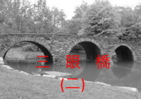

三眼橋 (二)
- 1. 不從惡人的計謀 不站罪人的道路 不坐褻慢人的座位
- 2. 無所不知 無所不能 無所不在
- 3. 昨日 今日 明日
- 4. 先知/沒藥 祭司/乳香 君王/黃金
- 5. 摩西的手仗 掃羅的戰衣 大衛的石子
- 6. 小基督 假基督 敵基督
- 7. 我是道路 我是真理 我是生命
- 8. 斗底下 床底下 地窖裏
- 9. 撒但 世界 自己
- 10. 為義人死 為仁人死 為罪人死
- 11. 出來 入去 上來
- 12. 偷竊 殺害 毀壞
- 13. 不能朽壞 不能玷污 不能衰殘
- 14. 風聞 眼見 手摸
- 15. 救他們 領他們 到美好
- 16. 看自己 看別人 看環境
- 17. 奉祢的名傳道 奉祢的名趕鬼 奉祢的名行異能
- 18. 假民主 錯直選 真自由